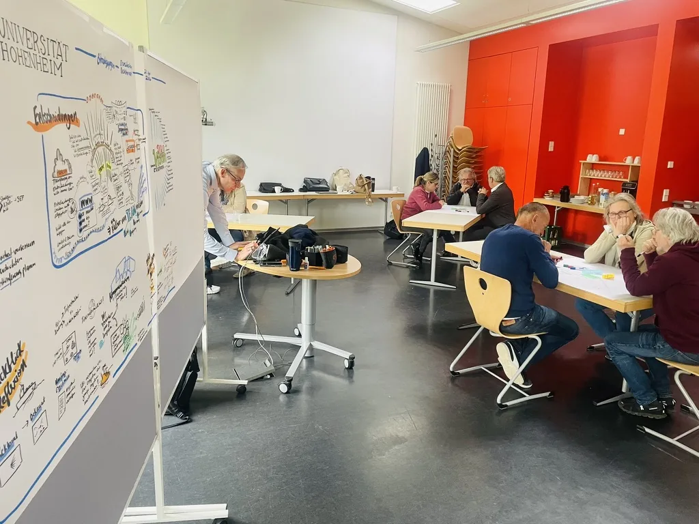

Du erzählst. Ich frage und zeichne.You Talk. I Ask and Draw.
Im Coaching arbeiten wir an dem, was Dich gerade beschäftigt: Deine Story und Dein Angebot, Deine Rolle als Führungskraft in der Veränderung oder Dein Umgang mit KI. Ich höre zu, stelle Fragen und zeichne mit. So siehst Du Deine Gedanken vor Dir und erkennst, wo Du ansetzen kannst. In coaching we work on what is on your mind right now: your story and your offer, your role as a leader in change, or how you work with AI. I listen, ask questions and draw along. So you see your thoughts in front of you and recognise where to start.
Du arbeitest mit einem Team oder einer Organisation? Zu den Angeboten für Unternehmen Working with a team or an organisation? See the offers for organisations
Drei Coaching-FormateThree Coaching Formats
Story & Strategy Coaching
Für Gründende, Trainer und Coaches, die ihre Marke und ihr Angebot aufbauen. Dabei entsteht mit KI Deine Website. Einzelne Sessions sind auch möglich.For founders, trainers and coaches building their brand and their offer. Along the way, your website is built with AI. Single sessions are possible too.
Mehr erfahrenLearn more
Leadership Coaching
Für Führungskräfte, die ihr Team oder ihr Unternehmen durch Veränderung führen, auch durch den Wandel mit KI.For leaders guiding their team or company through change, including the shift to AI.
Mehr erfahrenLearn moreAI Agency Coaching
Für Entrepreneure und Führungskräfte, die KI verstehen und KI-Tools gut und verantwortungsvoll nutzen wollen.For entrepreneurs and leaders who want to understand AI and use AI tools well and responsibly.
Mehr erfahrenLearn moreErst zuhören. Dann sichtbar machen.Listen First. Then Make It Visible.
In allen drei Formaten nutze ich dieselben Werkzeuge wie in meiner Arbeit mit Organisationen: gute Fragen, einen klaren Ablauf und ein Bild, das zeigt, was zusammenhängt. Mitzeichnen geht vor Ort und digital, zum Beispiel auf dem iPad. In all three formats I use the same tools as in my work with organisations: good questions, a clear process and a picture that shows how things connect. Drawing along works in person and digitally, for example on an iPad.
- Zuhören und fragenListen and ask Du erzählst, was Dich beschäftigt. Ich frage nach, bis klar wird, worum es Dir wirklich geht.You tell me what is on your mind. I ask until it becomes clear what really matters to you.
- MitzeichnenDraw along Während wir sprechen, zeichne ich mit. Deine Gedanken werden zu einem Bild, in dem Du Zusammenhänge siehst.While we talk, I draw along. Your thoughts turn into a picture in which you can see the connections.
- EntscheidenDecide Aus dem Bild ergibt sich, was jetzt wichtig ist. Du gehst mit einem nächsten Schritt raus, den Du selbst gewählt hast.The picture shows what matters now. You leave with a next step you chose yourself.
- Ein Bild Deiner Gedanken, mit dem Du weiterarbeiten kannstA picture of your thoughts that you can keep working with
- Klarheit darüber, was jetzt dran istClarity about what matters now
- Einen nächsten Schritt, den Du selbst gewählt hastA next step you chose yourself
Hi, ich bin RobinHi, I’m Robin
Facilitator und Gründer von AIwareness.spaceFacilitator and founder of AIwareness.space
Seit über zehn Jahren begleite ich Veränderung als Facilitator und Visual Facilitator. Ich habe mit vielen unterschiedlichen Führungskräften, Gründenden, Trainern und Coaches gearbeitet. For more than ten years I have supported change as a facilitator and visual facilitator. I have worked with many different leaders, founders, trainers and coaches.
Mit AIwareness beschäftige ich mich jeden Tag mit KI und ihren Risiken. Das fließt auch ins Coaching ein: Ich zeige Dir, wie KI Dir helfen kann, und wo Du selbst entscheiden solltest. With AIwareness I work with AI and its risks every day. That flows into my coaching too: I show you how AI can help you, and where you should decide for yourself.
Mehr über meinen WegMore about my pathWelches Format passt zu Dir?Which Format Fits You?
Schreib mir ein paar Zeilen, wo Du gerade stehst. Im Vorgespräch finden wir heraus, ob und wie wir zusammenarbeiten.Write me a few lines about where you are right now. In a first conversation we find out whether and how we work together.
Vorgespräch anfragenRequest a first conversation
oder schreib mir direktor write to me directly
robin@robin-hotz.com